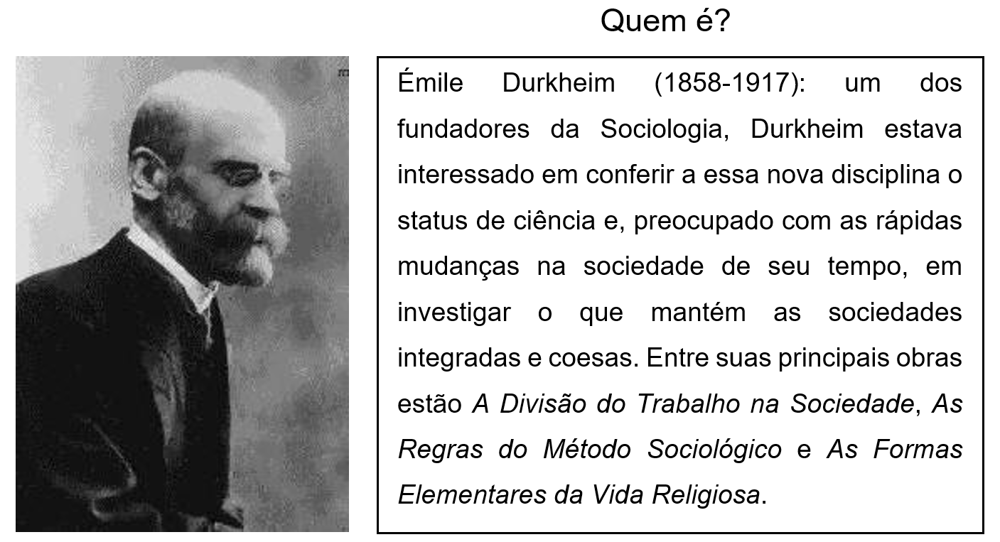
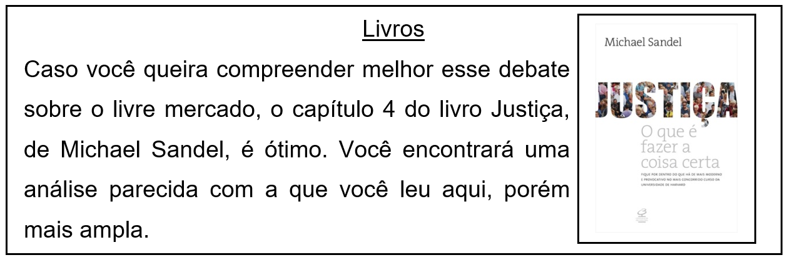

CAPÍTULO 3: LIBERDADE E ESCOLHA DE MERCADO NA INDÚSTRIA CALÇADISTA
Será que todas as pessoas são livres quando fazem suas escolhas? Se nem todas as escolhas são livres, o que é preciso para que uma escolha possa ser considerada livre?
A defesa do livre mercado
No último capítulo, vimos que o libertarismo defende que a interferência do Estado nas escolhas que as pessoas fazem no mercado de trabalho e de consumo viola a liberdade individual dessas pessoas quando essa interferência visa à distribuição de riqueza: se duas pessoas estabeleceram, voluntariamente, um contrato de troca (de dinheiro, por exemplo, por um serviço ou produto), então, defende o libertário, o Estado não tem o direito de intervir nessa troca e de se apropriar de parte do que está sendo trocado a fim de promover o bem-estar social. Essa é uma defesa libertária do livre mercado porque se baseia na premissa de que não respeitar o livre mercado envolve a violação da liberdade individual dos cidadãos. Mas o livre mercado também pode ser defendido com base em uma premissa utilitarista: se duas pessoas estabeleceram, voluntariamente, um contrato de troca, então essa troca se explica pelo fato de que ela trará maior bem-estar para as pessoas que estabeleceram o contrato – se eu troco meu dinheiro por uma geladeira, é porque eu penso que a geladeira me trará bem-estar; e se o vendedor da geladeira aceita o meu dinheiro, é porque ele pensa que o meu dinheiro lhe trará bem-estar.
Para entender mais
Se você acessar o Youtube e digitar, no campo de pesquisa, “Milton Friedman defendendo que o livre mercado é melhor para os pobres”, você verá um bom exemplo de defesa do livre mercado.
Questionando a liberdade e o bem-estar
Talvez você já tenha ouvido falar no sociólogo francês Émile Durkheim (1858-1917), um dos fundadores da sociologia. Entre as preocupações teóricas de Durkheim, em seu esforço para fundar a “ciência da sociedade”, estava a de delimitar o objeto de estudo dessa nova ciência – pois toda ciência deve deixar claro o que é que ela estuda. A sociologia, pensou Durkheim, deveria estudar fatos sociais: fatos que constituem as sociedades e que exercem algum tipo de coerção sobre os indivíduos que nelas vivem. Tome como exemplo a moda: ela é um fenômeno social que impõe às pessoas um certo padrão de comportamento. Se você resolver andar na rua usando roupas do século XVII, é provável que você sofra algum tipo de rejeição. Você não receberá nenhuma punição direta, como ser preso, mas provavelmente sofrerá algum tipo de rejeição social: as pessoas olharão para você com reprovação, talvez não queiram falar com você ou talvez até lhe dirijam críticas. Ou seja, ao escolher usar as roupas que você usa, talvez você pense que está sendo absolutamente livre. No entanto, o universo de escolhas que você pode fazer, sem risco de sofrer rejeição, é bastante restrito e limitado pelos padrões da época e do lugar em que você vive. Essa percepção de Durkheim da relação que existe entre ser livre e viver em sociedade pode ser o nosso ponto de partida para analisarmos uma importante objeção à defesa que os libertários fazem do livre mercado: a de que nem todas as escolhas que as pessoas fazem no livre mercado são efetivamente livres.
Suponhamos que você tenha nascido em uma cidade que lhe ofereceu poucas oportunidades de estudo e que lhe oferece poucas oportunidades de trabalho, e que sua família não tenha podido lhe dar condições de viver e estudar em outra cidade que oferecesse melhores condições para o seu desenvolvimento pessoal e profissional. Após uma negociação entre o prefeito de sua cidade e o presidente de uma grande fábrica calçadista, essa fábrica decide instalar uma linha de produção em sua cidade. O salário que a fábrica oferece é muito maior do que aquele oferecido pelas outras opções que estão disponíveis para você. Com esse salário, você poderia melhorar bastante suas condições de vida, podendo dar aos seus filhos, supondo que você tenha filhos, a oportunidade de estudar em outra cidade, a fim de que eles possam, no futuro, dedicar-se a uma profissão altamente lucrativa. No entanto, para receber esse salário, você terá de trabalhar durante quinze horas por dia desempenhando uma função bastante cansativa que, por vezes, poderá lhe causar algum dano físico severo. Se você levar jeito para essa função, e contar com um pouco de sorte, pode ser que você saia ileso. Mas o desgaste e os riscos são grandes. O que você faria nessa situação? Aceitaria o emprego?
Glossário:
Coerção. S. f. 1. Ato de coagir, coação. 2. Repressão, coibição.
Fonte: Dicionário Aurélio.
Caso você aceitasse o emprego, ninguém poderia dizer que você foi obrigado a aceitá-lo. Você tinha outras opções disponíveis na sua cidade, ainda que oferecessem uma remuneração muito menor, e ninguém se apropriou de você, como de um escravo, obrigando-o a se dedicar a esse trabalho árduo e perigoso. E se você não foi obrigado a realizar o trabalho, tendo escolhido, voluntariamente, desempenhar essa função, talvez ninguém pudesse dizer que você não foi livre ao aceitar o emprego. No entanto, será mesmo que você foi livre ao tomar sua decisão? Esta se deu por uma questão de preferência, porque você realmente queria desempenhar aquela função, ou por uma questão de necessidade? As oportunidades que você teve ao longo da vida e as opções que estavam à sua disposição no momento de sua decisão são parecidas com as de alguém que nasceu em uma família com boas condições materiais e em uma cidade que oferece várias oportunidades de estudo e emprego?
Parece inquestionável que uma pessoa que tem à sua disposição uma ampla gama de caminhos a tomar, com chances reais de conseguir trilhá-los – como conseguir, por exemplo, uma vaga em qualquer curso nas melhores universidades do país –, é mais livre do que uma pessoa que tem à sua frente apenas uma ou duas opções de caminhos de vida para seguir. Pode-se argumentar, claro, que todos os caminhos estão abertos para qualquer pessoa: as vagas em uma boa universidade, por exemplo, estão abertas para todos. No entanto, também é verdade que as pessoas partem, muitas vezes, de pontos de partida bastante diferentes, e que a jornada para algumas pode ser muito mais longa e tortuosa do que para outras, e que as dificuldades podem, muitas vezes, acabar se tornando obstáculos praticamente intransponíveis para alguns, de tal modo que algumas dessas pessoas acabem “escolhendo” uma opção mais acessível.
Para entender mais
Para melhor compreender a objeção à tese libertária de que as escolhas feitas no livre mercado são sempre livres, podemos traçar um paralelo entre o exemplo envolvendo os funcionários da fábrica de calçados de nossa cidade fictícia e o alistamento militar nos Estados Unidos da América:
“A situação econômica e escolar dos atuais voluntários do exército comprova a lógica dessa objeção, pelo menos até certo ponto. Jovens de regiões de baixa e média renda [...] representam a maioria nas fileiras ativas do exército. Os 10% mais pobres da população (muitos dos quais podem não preencher os requisitos de educação e capacidade) e os 20% mais abastados [...] são os que têm menor representação. Nos últimos anos, mais de 25% dos recrutas não têm diploma de ensino médio. E, enquanto 46% da população civil possui algum tipo de educação universitária, apenas 6,5% dos componentes das fileiras militares entre 18 e 24 anos frequentaram uma universidade”. (SANDEL, 2012, p. 107.)

Para se aprofundar no debate deste capítulo, assista às aulas 9 e 10 do curso de Justiça: o que é fazer a coisa certa, de Michael Sandel, disponível no Youtube.
Ação e reflexão
1) Explique o argumento libertário de defesa do livre mercado.
2) Explique o argumento utilitarista de defesa do livre mercado.
3) Neste capítulo, vimos que a moda é um exemplo de fenômeno social que exerce um tipo de coerção sobre os indivíduos. Você saberia apresentar algum outro exemplo de fenômeno desse tipo?
4) Explique a objeção, vista neste capítulo, à tese libertária de que as escolhas feitas no livre mercado são sempre livres.
5) Você concorda com a ideia de que uma pessoa que tem menos opções de caminhos a seguir em sua vida é menos livre do que outra que tem mais opções à sua frente? Por quê?
6) Você acha que deve haver limites para o que o dinheiro pode comprar, mesmo que com o consentimento das partes envolvidas na negociação?
O que aprendi
Neste capítulo, você aprendeu que:
1) O livre mercado pode ser defendido com base em uma premissa libertária e em uma premissa utilitarista.
2) Existem fenômenos sociais que exercem diferentes tipos de coerção sobre os indivíduos.
3) A defesa libertária pode ser questionada – o que não significa que esteja provado que ela é falsa – com base na ideia de que nem todas as decisões tomadas no livre mercado são efetivamente livres.
4) A premissa utilitarista pode ser questionada com base na ideia de que a defesa do bem-estar talvez não justifique toda e qualquer troca realizada no livre mercado.